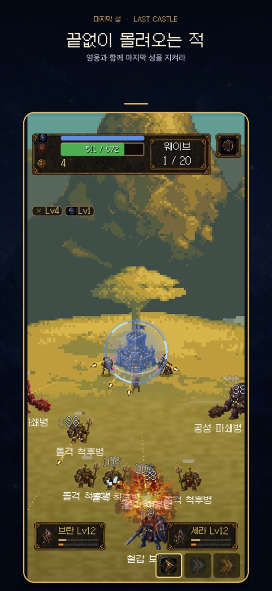
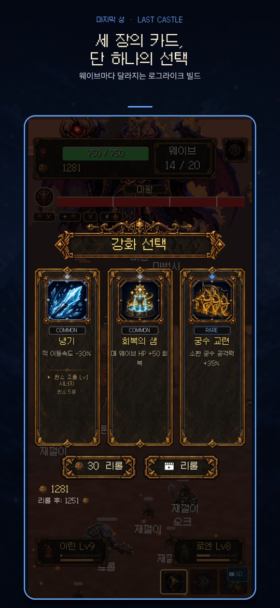
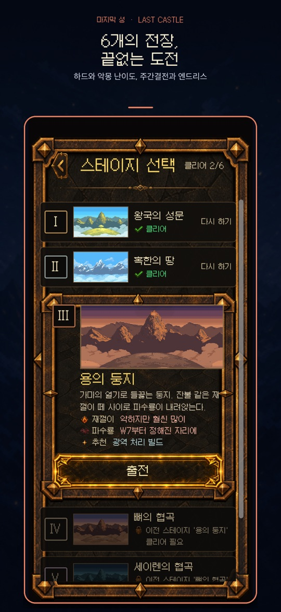

화면 가운데의 성 하나를 지키는 세로형 로그라이크 디펜스입니다. 성은 스스로 공격하고, 플레이어는 웨이브가 끝날 때마다 강화 카드 3장 중 1장을 골라 이번 런의 빌드를 만듭니다.
게임의 기본 흐름
- 스테이지를 고르고 출전하면 적이 사방에서 성으로 몰려옵니다. 성은 범위 안의 적을 자동으로 공격합니다.
- 웨이브를 버티면 강화 선택 화면이 열리고 카드 3장 중 1장을 고릅니다. 다중 화살, 관통, 화염, 냉기, 독, 번개, 소환, 보호막 같은 효과가 쌓이며, 조합이 맞으면 시너지가 활성화됩니다.
- 스테이지는 20웨이브로 구성되며, 성의 HP가 0이 되면 그 런은 끝납니다. 런에서 고른 카드는 다음 런으로 이어지지 않습니다.
- 런이 끝난 뒤 메인 메뉴의 성 강화에서 런을 넘어 유지되는 영구 강화를 진행하고 다시 도전합니다.
현재 버전에는 성 양옆(왼쪽·오른쪽)에 영웅 두 명을 편성하는 기능, 모집과 육성, 시즌 패스도 있습니다. 스토어 설명 기준으로 영웅은 15명이며, 영웅마다 고유한 스킬과 비기가 있습니다.
조작
- 전투 중: 성의 공격은 자동입니다. 이동이나 조준 조작은 없습니다.
- 강화 선택: 원하는 카드를 탭합니다. 마음에 드는 카드가 없으면 골드를 써서 리롤할 수 있고, 무료 리롤이나 광고 리롤이 표시되는 경우도 있습니다. 리롤 버튼에는 리롤 뒤 남는 골드가 미리 보입니다.
- 일시정지: 화면의 일시정지 버튼으로 계속하기, 강화 히스토리, 설정, 런 다시 시작, 메인 메뉴로 이동을 고를 수 있습니다. 메인 메뉴로 나가면 현재 런의 진행 상황은 사라집니다.
- 부활: 성이 무너지기 직전에 광고를 보고 HP 50%로 다시 일어서는 선택지가 나올 수 있습니다(런당 1회).
처음 시작하기
- 아래 스토어 링크에서 사용하는 기기에 맞는 버전을 설치합니다.
- 메인 메뉴의 튜토리얼로 카드 선택 흐름을 먼저 확인합니다.
- 스테이지 선택에서 첫 전장 ‘왕국의 성문’을 골라 출전합니다. 다음 스테이지는 이전 스테이지를 클리어해야 열립니다.
- 웨이브가 끝날 때마다 카드를 고르고, 런이 끝나면 결과 화면에서 받은 보상을 확인합니다.
- 메인 메뉴의 성 강화로 영구 강화를 한 뒤 다음 런을 시작합니다. 스테이지 1을 클리어하면 도전 메뉴에서 엔드리스 모드가 열립니다.
초보자를 위한 참고 팁
아래 내용은 화면 정보와 게임 구조를 바탕으로 한 제안입니다. 카드는 무작위로 제시되므로 같은 선택이 언제나 통한다는 보장은 없습니다.
- 성 HP부터 보세요. HP가 넉넉하면 화력을 키우는 카드, HP가 위태로우면 회복이나 보호막 카드를 먼저 검토하는 방식이 무난합니다.
- 한두 방향으로 모아 보세요. 효과를 고르게 흩뜨리기보다 비슷한 계열을 이어서 고르면 ‘시너지 활성화’ 알림으로 조합이 맞았는지 확인하기 쉽습니다.
- 리롤 전에 남는 골드를 확인하세요. 골드는 리롤과 전투 중 상점 강화에 함께 쓰이므로, 리롤 버튼의 ‘리롤 후’ 금액을 보고 결정합니다.
- 스테이지 설명을 읽으세요. 스테이지 선택 화면에는 그 전장의 특징과 추천 빌드(예: 광역 처리)가 적혀 있습니다.
- 강화 히스토리로 런을 돌아보세요. 일시정지 메뉴의 강화 히스토리에서 이번 런에 무엇을 골랐는지 볼 수 있어, 패배 원인을 짚어 보기 좋습니다.
- 영웅 전술 보기를 활용하세요. 영웅 화면의 전술 안내는 그 영웅이 놓치기 쉬운 적을 성의 어떤 공격으로 보완할지 알려 줍니다. 성과 소환 궁수에 붙는 강화 효과는 영웅에게 적용되지 않습니다.
- 조합도감을 열어 보세요. 메인 메뉴의 조합도감에서 시너지 조합을 미리 살펴보고 런 방향을 정할 수 있습니다.
- 하드는 일반 클리어 뒤에. 하드는 적 HP +100%, 적 데미지 +30%, 적 수 +100%, 획득 골드 −50% 조건입니다.
스크린샷
App Store 한국 스토어에 게시된 공식 스크린샷입니다(버전 1.7.3 기준, 홍보 문구 포함).



자주 묻는 질문
- 직접 조작해야 하는 부분이 많나요?
- 전투는 자동입니다. 핵심은 웨이브 사이의 카드 선택, 리롤, 영웅 편성 같은 결정입니다.
- 런에서 지면 모든 진행이 사라지나요?
- 그 런에서 고른 카드는 초기화됩니다. 성 강화처럼 런을 넘어 유지되는 영구 성장과 스테이지 클리어 기록은 남습니다.
- 엔드리스·악몽 모드는 언제 열리나요?
- 엔드리스 모드는 스테이지 1을 클리어하면 열립니다. 악몽 난이도는 모든 스테이지를 하드로 클리어하면 열리며, 시작할 때 도전 과제 1개를 골라야 합니다. 엔드리스 모드에서는 다이아를 받지 않습니다.
- 무료인가요? 광고나 유료 상품이 있나요?
- 무료로 설치할 수 있습니다. Google Play 페이지에는 ‘광고 포함’이 표시되어 있고, 시즌 패스 프리미엄 보상처럼 앱 안의 유료 상품도 있습니다. 가격과 구성은 스토어와 앱 안에서 확인해 주세요.
- 스토어마다 내용이 같나요?
- 같은 게임이지만 스토어마다 업데이트가 반영되는 시점이 다를 수 있습니다. 2026년 10월 20일 기준 App Store와 Google Play는 1.7.3이었고, 원스토어 버전은 이 페이지에서 확인하지 못했습니다.
- 버그는 어떻게 알리나요?
- ricecookey.help@gmail.com으로 기기 모델, OS 버전, 앱 버전, 스테이지와 웨이브, 가능하면 스크린샷이나 화면 녹화를 함께 보내 주세요.
스토어 링크
무료 버전(광고·앱 내 유료 상품 포함)
iOS 15.0 이상(App Store 기준), 연령 등급 12+(App Store), 지원 언어: 한국어·영어·일본어·프랑스어·스페인어(App Store 기준).
문의
질문, 요청, 버그 제보: ricecookey.help@gmail.com
참고 자료와 확인 범위
- App Store 페이지 — 버전 1.7.3(2026년 10월 17일 배포), 설명과 스크린샷
- Google Play 페이지 — 2026년 10월 17일 업데이트(1.7.3 안내), 영웅·모집·시즌 패스·난이도 설명
- 원스토어 페이지 — 판매 페이지 존재만 확인
- 개발 기록: 성을 지키는 선택의 설계
조작, 메뉴 이름, 해금 조건과 하드 수치는 2026년 10월 20일에 확인한 게임 화면 문구와 스토어 설명을 따랐습니다. 업데이트로 달라질 수 있으며, 앱 안의 표시가 이 페이지보다 우선합니다.
English
Last Castle is a portrait roguelike defense game about protecting one castle in the middle of the screen. The castle attacks on its own; after each wave you pick one of three upgrade cards to shape that run's build.
How a run works
- Pick a stage and deploy. Enemies close in from every side, and the castle automatically attacks enemies in range.
- Survive the wave and the upgrade selection screen opens: choose one of three cards. Effects such as multishot, piercing, fire, frost, poison, lightning, summons and shields stack up, and matching combinations activate synergies.
- A stage has 20 waves. When the castle's HP reaches 0, the run ends, and the cards chosen in that run do not carry over.
- Between runs, use Castle Upgrade on the main menu for permanent upgrades that persist across runs, then try again.
The current version also lets you place two heroes beside the castle (left and right slots), recruit and train them, and earn season pass rewards. According to the store listing there are 15 heroes, each with its own skill and ultimate.
Controls
- In battle: the castle attacks automatically. There is no moving or aiming.
- Upgrade selection: tap a card. If none fits, spend gold to reroll; free rerolls or ad rerolls may also appear. The reroll button previews how much gold you will have left.
- Pause: the on-screen pause button offers Resume, Upgrade History, Settings, Restart Run and Main Menu. Leaving for the main menu discards the current run.
- Revive: when the castle is about to fall, you may be offered a revive at 50% HP by watching an ad (once per run).
Getting started
- Install the version for your device from the store links below.
- Open Tutorial on the main menu to see how card selection works.
- In Select Stage, deploy to the first battlefield, Kingdom Gate. Each later stage opens after you clear the one before it.
- Choose a card after every wave, and check your rewards on the results screen when the run ends.
- Spend on Castle Upgrade, then start the next run. Clearing Stage 1 unlocks Endless Mode in the challenge menu.
Beginner tips
These are suggestions based on what the game shows and how it is structured. Cards are offered at random, so no choice is guaranteed to work every time.
- Check castle HP first. With plenty of HP, firepower cards are a reasonable pick; when HP is low, consider healing or shield cards first.
- Lean into one or two directions. Picking related effects instead of spreading out makes it easier to see when a combination lands, because a “Synergy Activated” notice appears.
- Check leftover gold before rerolling. Gold pays for both rerolls and the in-battle shop, so look at the “After reroll” amount first.
- Read the stage description. The stage select screen lists each battlefield's traits and a recommended build, such as crowd clearing.
- Review the run in Upgrade History. The pause menu lists what you picked this run, which helps when working out why a run failed.
- Use Show hero tactics. The hero tactics note suggests which castle attacks cover the enemies a hero tends to miss. Upgrades for the castle and summoned archers do not apply to heroes.
- Open the Codex. The Codex on the main menu lets you look over synergy combinations before deciding a run's direction.
- Try Hard after a normal clear. Hard means enemy HP +100%, enemy damage +30%, enemy count +100% and gold −50%.
Screenshots
Official screenshots from the Korean App Store listing (version 1.7.3, including promotional captions, Korean UI).
FAQ
- Do I need to control much during battle?
- No. Combat is automatic; the game is about decisions between waves: cards, rerolls and hero lineup.
- Do I lose everything when a run fails?
- The cards from that run reset. Permanent growth such as Castle Upgrade and your stage clears remain.
- When do Endless and Nightmare open?
- Endless Mode unlocks after clearing Stage 1. Nightmare unlocks after clearing every stage on Hard and requires picking one challenge before you start. Endless Mode does not award diamonds.
- Is it free? Are there ads or paid items?
- It is free to install. The Google Play page shows “Contains ads”, and there are paid in-app items such as the premium season pass track. Check the store and the app for current prices and contents.
- Is every store version the same?
- It is the same game, but updates can reach each store at different times. On October 20, 2026 the App Store and Google Play showed 1.7.3; the ONE Store version was not checked for this page.
- How do I report a bug?
- Email ricecookey.help@gmail.com with your device model, OS version, app version, stage and wave, plus a screenshot or screen recording if possible.
Store links
Free edition (ads and paid in-app items)
Requires iOS 15.0 or later (App Store), rated 12+ (App Store), languages: Korean, English, Japanese, French and Spanish (App Store).
Contact
Questions, requests and bug reports: ricecookey.help@gmail.com
References and scope
- App Store listing — version 1.7.3 (released October 17, 2026), description and screenshots
- Google Play listing — updated October 17, 2026 (1.7.3 notes); heroes, recruiting, season pass and difficulty
- ONE Store listing — listing presence only
- Development journal: Designing choices that defend the castle
Controls, menu names, unlock conditions and Hard values follow the in-game text and store listings checked on October 20, 2026. Updates may change them, and what the app shows takes precedence over this page.